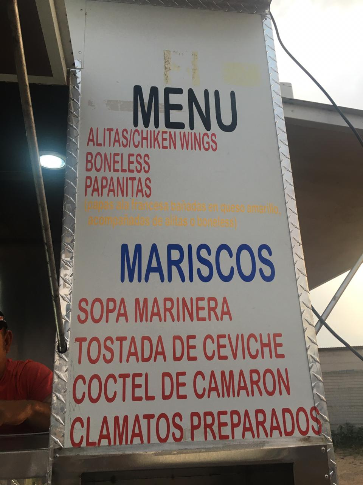
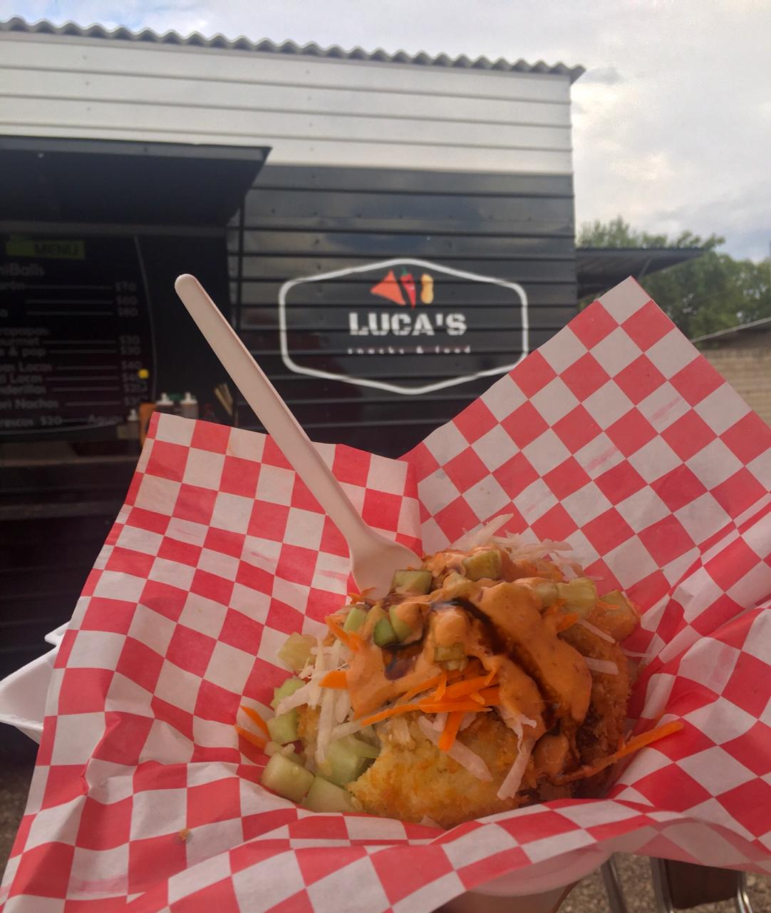
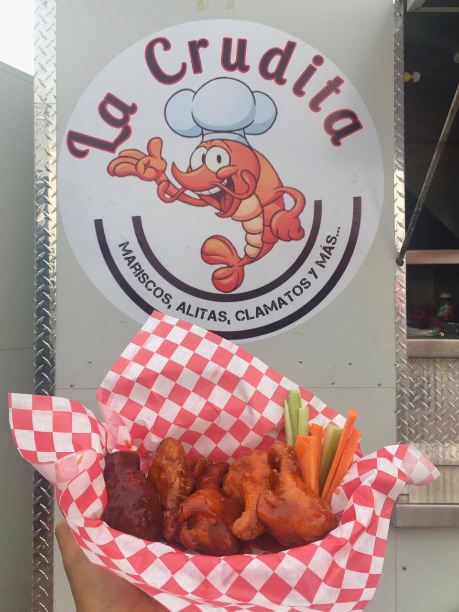
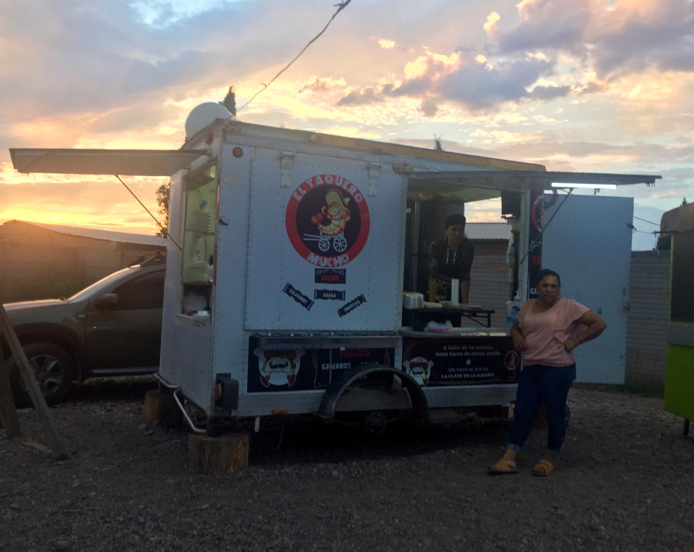
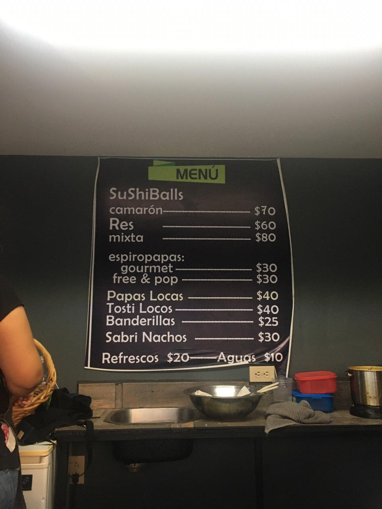
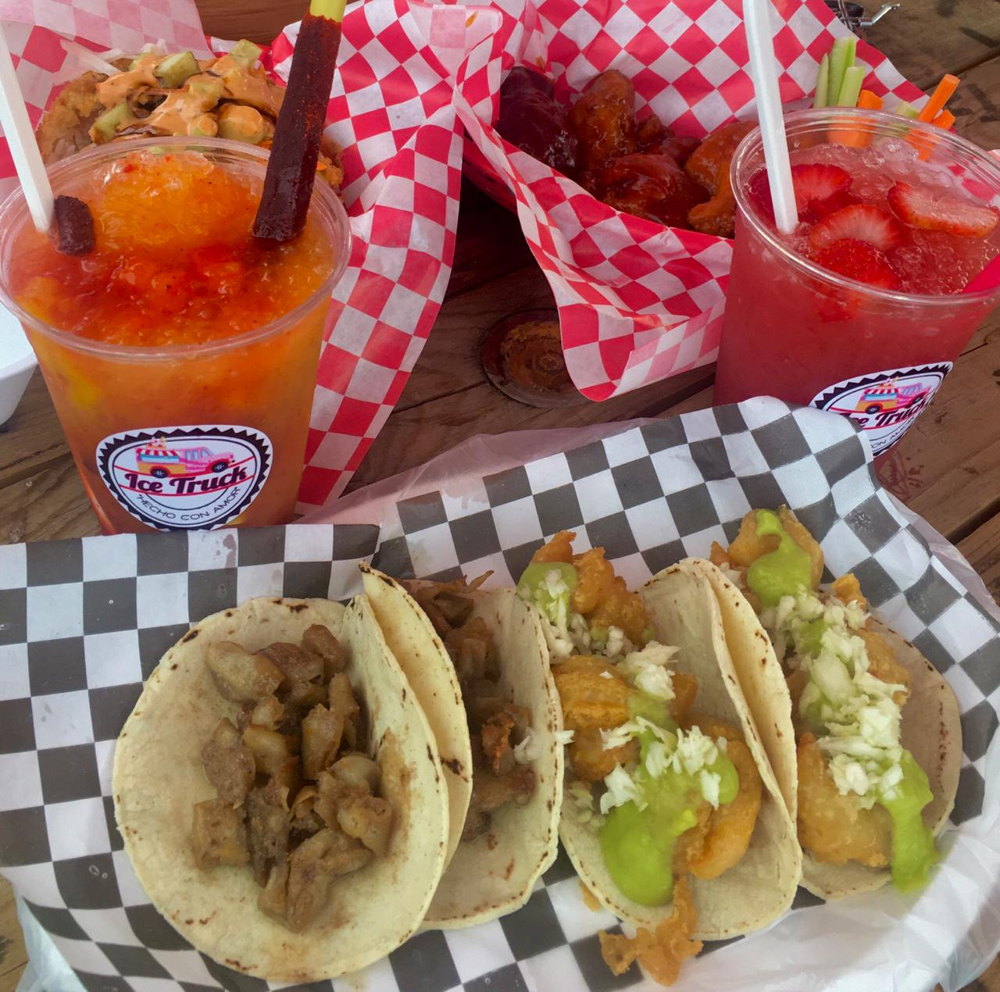
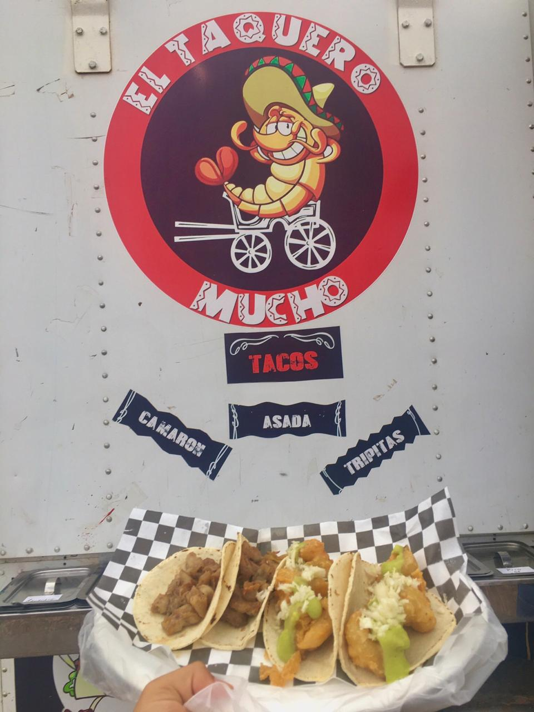
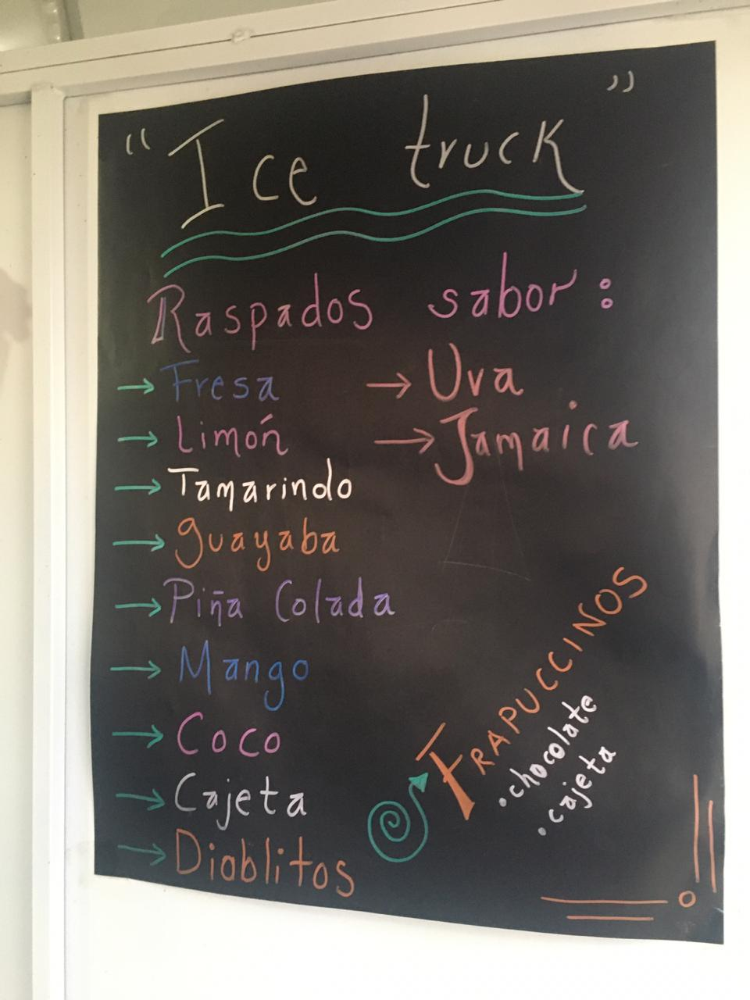
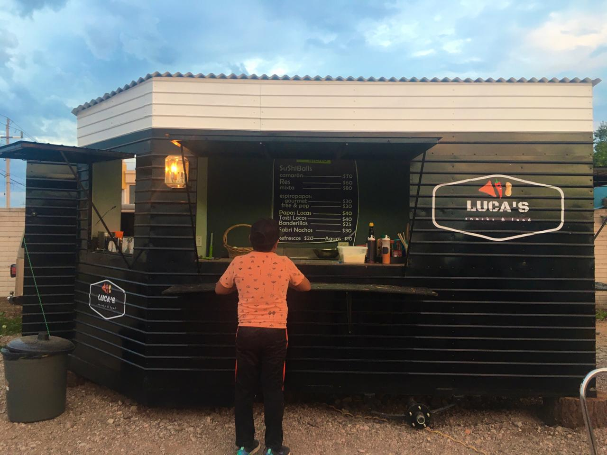
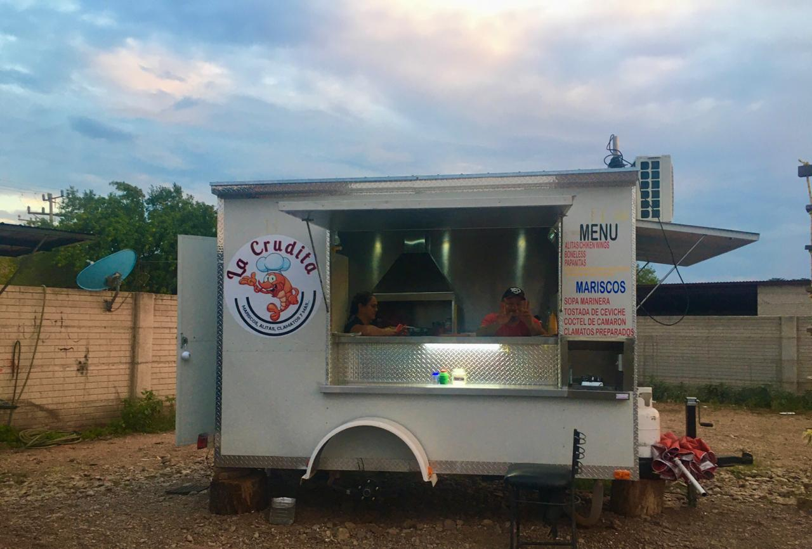

Notas
Food Truck
LUCA´S snaks
636-114-46-16 Sara
La crudita
636-132-19-85
El taquero
636-697-76-05
Ice truck
Fernanda Polanco
Food Truck es un negocio familiar en el que está divido en 4 puestos pequeños cada uno vende un estilo diferente de comida rápida, tienen abierto los fines de semana esta abiertos aproximadamente de las 5 de la tarde en adelante, ellos cuentan con una página en internet en donde puedes estar al pendiente de sus promociones, horarios y si algún día llegan a cerrar. Food truck se encuentra ubicado en Lagunitas, Galeana, Chihuahua.
Si no sabes que comer un fin de semana Food truck es una de tus mejores opciones para comer al aire libre y disfrutar de la música y en unos minutos estar comiendo de tu comida favorita.
Algunas de las comidas que estas deliciosas en Food truck son sus Sushi Balls mixtas es una bola de arroz rellena de carne asada y camarones, además puedes pedir alitas de cada sabor, algunas de las salsas de las alitas son hechos por ellos la salsa más recomendada es mango habanero y los tacos no se pueden quedar atrás aquí también encontrarás variedad de tacos así como de camarón, tripitas y asada donde cuentan con una barra de ingredientes y tu los puedes hacer a tu gusto y que mejor que acompañar toda esta delicia con una bebida rica y fresca aquí también tiene gran variedad de bebidas una de mis favoritas es el raspado sabor de fresa y Diablito es una bebida de mango con chile.
         
Reporte
Food Truck es un lugar donde puedes comer con tu familia o amigos al aire libre, está dividido en 4 puestos llamados LUCA´S, La crudita, El taquero mucho, y Ice truck cada uno de ellos con un concepto diferente de comida y bebidas, Food Truck se encuentra ubicado en Lagunitas, Galeana, Chihuahua.
Al llegar al estacionamiento puedes escuchar la música que tienen en medio de los cuatro negocios para hacer ambiente entre los clientes. Quien me atendió fue un muchacho joven al preguntarme qué quería de comer le digo que me de lo mejor de cada negocio no supo responderme así que llegó un señor de los 4 negocios y me dio una mejor explicación de cada uno de los 4 negocios inmediatamente me dijo que lo mejor de su negocio ¨La crudita¨ eran las alitas de cada sabor, los demás dueños de cada negocio se acercaron también y trataron de atenderme de la mejor forma así como lo había hecho el señor y ya cada uno de ellos me iba a traer la especialidad de cada uno de sus puestos aproximadamente se duró de 10 a 15 minutos para que mi mesa estuviera llena de comida y con algunas bebidas. LUCAS’S me trajo una bola de arroz rellena de carne asada y camarones realmente me gusto porque todo lo hacían al momento dentro de la bola de arroz también estaba esta incluía pepino y estaba fresco, en ningún momento pensé en un sabor desagradable al comerme la bola de arroz mixta, La crudita me trajo una orden de alitas cada una alita tenía un sabor diferente mango habanero, buffalo, bbq , bbq en salsa, cada una de ellas sabia riquisimo en especial ami el que mas me gusto fue la alita con salsa buffalo ya que tiene un sabor rico y no es tan picante, Taquero mucho me hizo una orden y media de tacos de camarón y la otra mitad de tacos de tripitas, cada sabor es diferente pero el que mas disfrute fue los tacos de camarón ya que están rellenos con una mezcla de ingredientes con muy rico sabor le puedes agregar algunas condimentos de la barra que tienen disponible para los tacos y agregar unas salsas especiales para los tacos de camarón están realmente riquísimos, por ultimo Ice truck me dio unos raspados estilo como si fuera una bebida, uno era sabor de fresa y la otra era Diablito básicamente un raspado sabor mango y chile, me gustaron los dos la verdad no me volvería a tomar un Diablito con mi comida porque no fue nada agradable comer comida picante y tomar algo picante, volvería a comprar los raspados pero sin que sean acompañados de comida y menos picante.
Buenos puntos:
Me atendieron desde que llegué al lugar a sentarme.
Buen servicio.
La comida era buena, cada comida tenía su sabor al igual que las bebidas.
No hubo mucho tiempo de espera para recibir lo que había ordenado.
Formato Essay
Food truck es un negocio familiar ubicado en Lagunitas, Galeana, Chihuahua. Está dividido en cuatro puestos con diferentes estilos de comida y bebidas, todos con el mismo objetivo, brindarte un excelente servicio y experiencia. Tienen abierto los fines de semana comenzando desde las 5 de la tarde hasta las 11 de la noche.
Deleita tu paladar probando algunas de las comidas y bebidas más recomendadas por los clientes, bola de arroz mixta rellena de carne asada y camarón, alitas de mango habanero, buffalo, bbq entre otros, tacos de camarón y tripitas y raspados sabor fresa y mango mejor conocido como el diablito.
No te quedes con las ganas y come hoy en Food Truck. Para más información encuentralos en facebook como Food Truck o marca al 636-132-19-85.